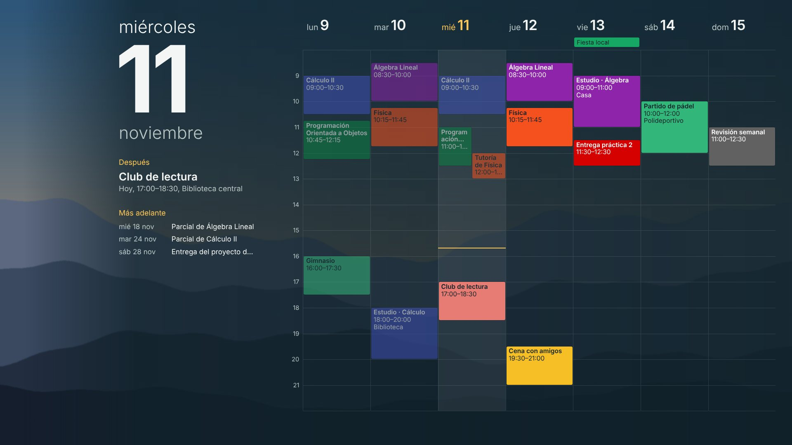
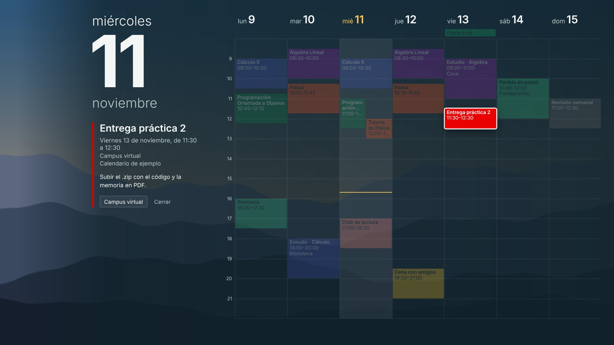

Calendario en el fondo
Tu Google Calendar, en directo y con clics, en el fondo de pantalla de Windows. Los cambios que haces en Google Calendar aparecen en el escritorio en segundos, y al pinchar un evento ves su descripción, lugar y enlaces.


Qué hace
- Lee tus calendarios de Google con permiso de solo lectura: no puede crear, cambiar ni borrar nada.
- Funciona entero en tu ordenador: un pequeño programa local habla con Google y dibuja la página que tu programa de fondos (Wallpaper Engine o Lively) muestra en el escritorio.
- No hay servidores del autor, cuentas ni estadísticas de uso.
Cómo instalarlo
Las instrucciones paso a paso están en el repositorio de GitHub (archivo LEEME.md).
Calendar wallpaper
A live, clickable Google Calendar on your Windows desktop. It runs entirely on your computer, uses read-only access and has no backend, accounts or analytics. See the privacy policy and the source code on GitHub.